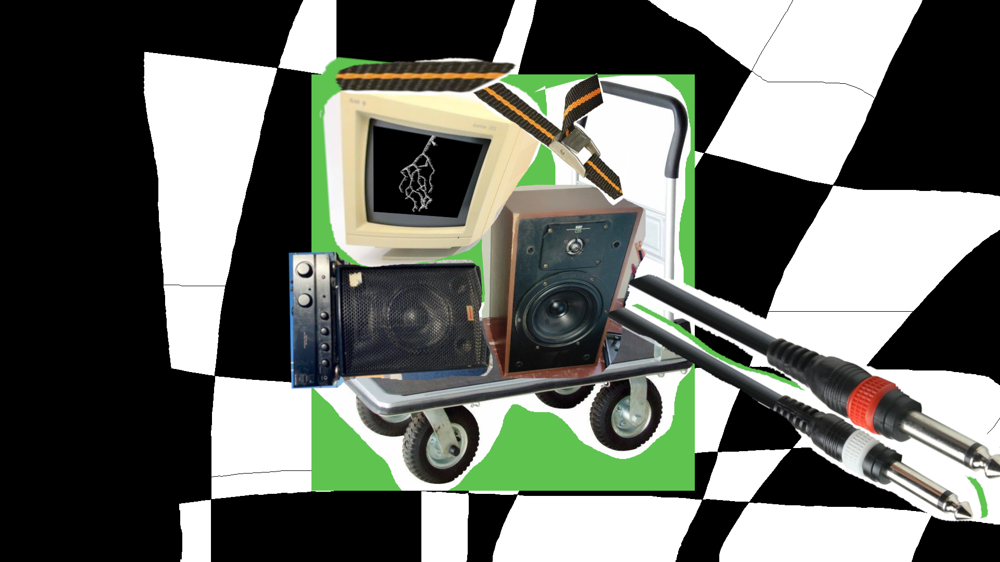
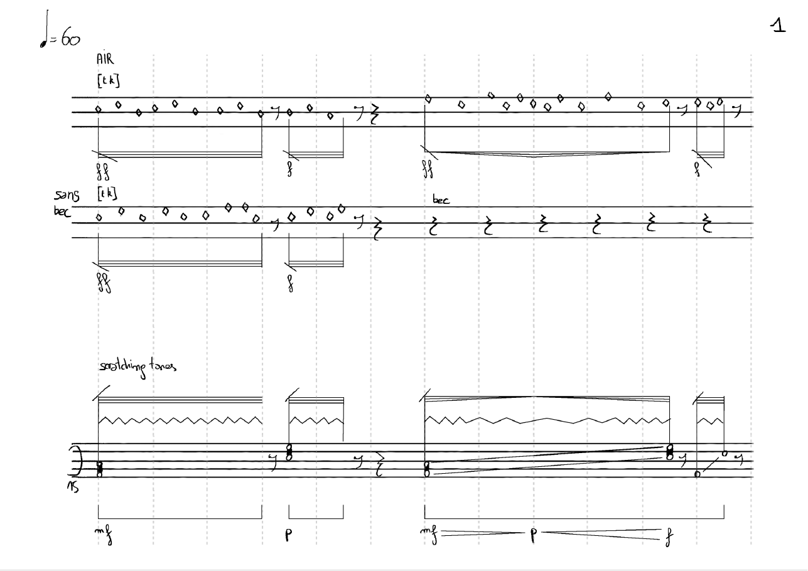
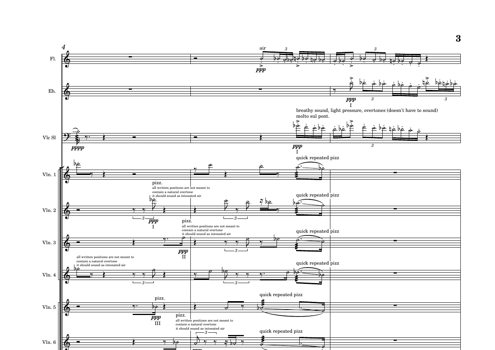
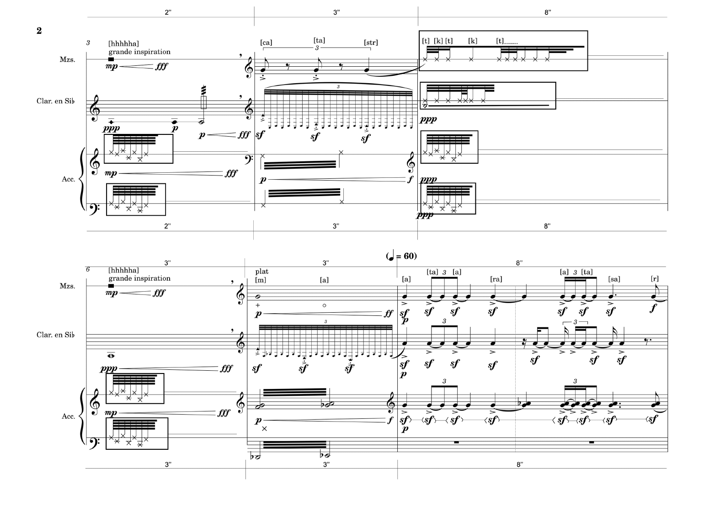
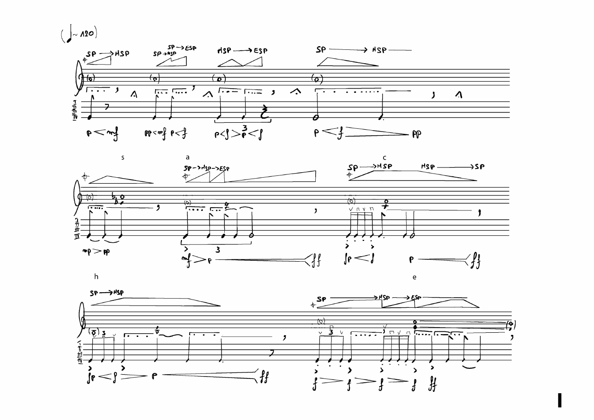
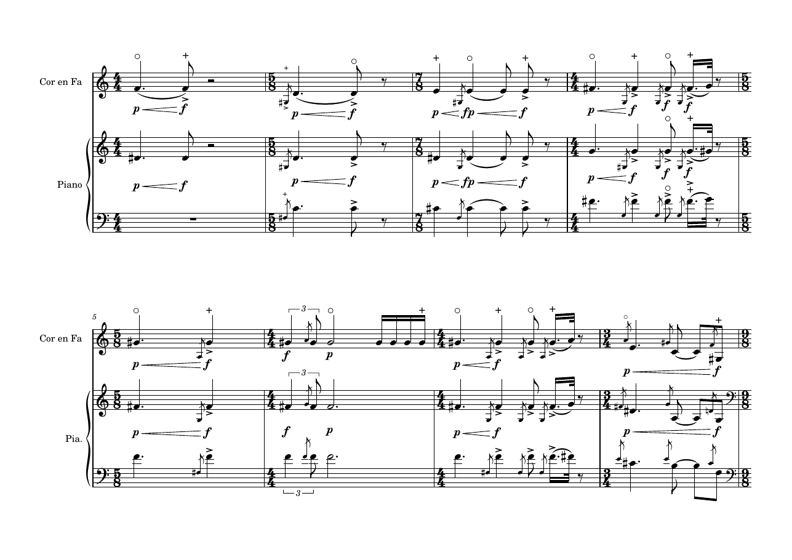
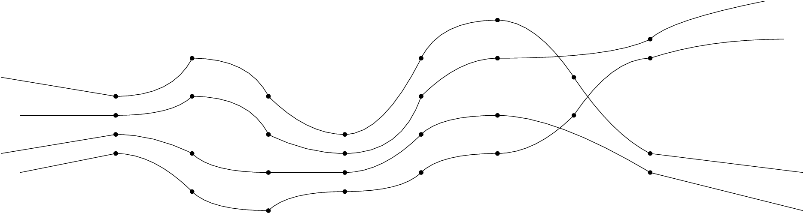
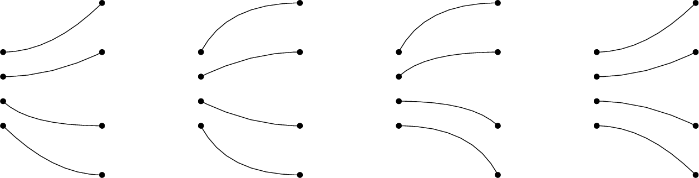

Compositeur.
Pour quatuor à cordes, 2026
Créé par le Quatuor Diotima.
Installation.

Pour flûte basse, saxophone baryton et piano, 2025

Pour flûte, erhu, violoncelle et orchestre à cordes, 2026

Pour voix, clarinette et accordéon

Pour violoncelle seul, 2025
Pour Paola Bodin-Navas

Pour cor en fa et piano

Quatre familles de fonctions d'interpolation appliquées aux accords, 2026

